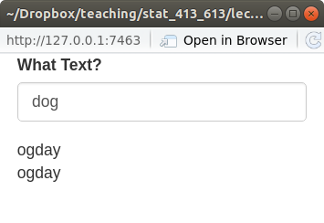
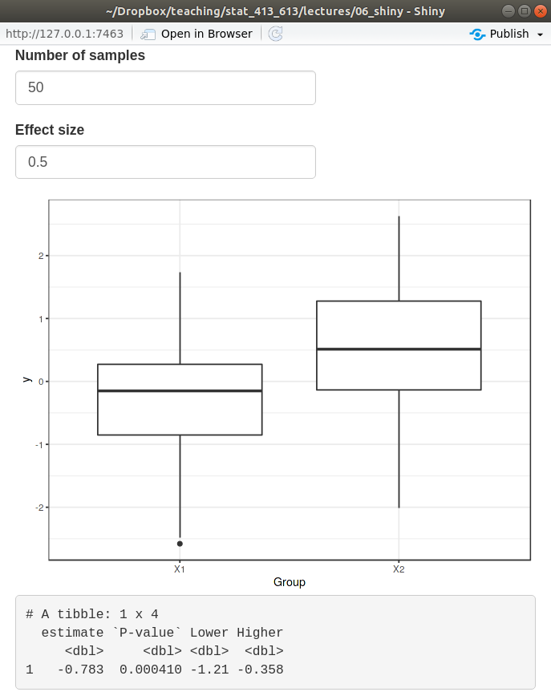
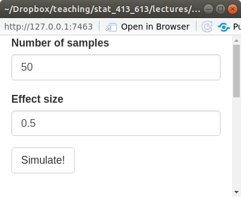

server <- function(input, output) {
}Reactivity and the server() Function
Learning Objectives
- Learn the basics reactivity and the the server() function in Shiny Apps.
- Chapter 4 of Mastering Shiny.
- Shiny Cheatsheet.
- Optional Resources
The Server Function
Recall, the server function should always look like this:
input:- A list-like object. These are elements that you access from the UI.
- Each element should have been created by an input function in the UI.
- Can only be accessed in either a
render*()function or in areactive()call. E.g. the following will throw an error:
library(shiny) ui <- fluidPage( textInput("text", "What Text", value = "Default Text") ) server <- function(input, output) { paste("The value text is", input$text) ## Don't do this! } shinyApp(ui = ui, server = server)output:- A list-like object. You modify the elements of
outputto send them to the UI. - You always use a
render*()function to modify elements ofoutput. You’ll get an error if you don’t use arender*()function.
library(shiny) ui <- fluidPage( textOutput("text") ) server <- function(input, output) { output$text <- "Hello World" ## Don't do this! } shinyApp(ui = ui, server = server)- A list-like object. You modify the elements of
Render Functions
You’ve already seen render functions. They are of the form:
render*({ ## Code goes here. })The curly braces allow you to write multiple lines of code and submit that as the argument.
Always save output of render function as an element of the output list.
Any input elements inside the
render*()function will trigger the render code to be re-evaluated when those input elements change.When an input element changes, it is said to be “invalidated”. This triggers the reactive elements.
When any input in a code chunk is invalidated, then Shiny will rerun the entire code chunk (not just the portion that was invalidated).
Exercise: Create a Shiny App that asks for a person’s name and prints “Hello” followed by the person’s name.
Reactive Expressions
You can create variables via
reactive()(technically not variables but “reactive elements”). They can then be used in differentrender*()functions.library(shiny) library(stringr) ui <- fluidPage( textInput("text", "What Text?", value = "dog"), textOutput("pigtext1"), textOutput("pigtext2") ) server <- function(input, output) { x <- reactive({ str_replace(input$text, "([^aeiouAEIOU]*)(.*)", "\\2\\1ay") }) output$pigtext1 <- renderText(x()) output$pigtext2 <- renderText(x()) } shinyApp(ui = ui, server = server)
The variables you create this way are called “reactive elements”.
You can use them in
render*()functions, but include a “()” after them (like they are function calls, because they technically are).That is, we defined
xbyx <- reactive({ str_replace(input$text, "([^aeiouAEIOU]*)(.*)", "\\2\\1ay") })But when we call it later, we need to use
x()If you didn’t use
reactive(), you would get an error (because you would be callinginput$textoutside of arender*()orreactive()call).An example with simulation data
library(shiny) library(tidyverse) library(broom) ui <- fluidPage( numericInput("nsamp", "Number of samples", value = 50, step = 1), numericInput("diff", "Effect size", value = 0.5, step = 0.1), plotOutput("plot"), verbatimTextOutput("text") ) server <- function(input, output) { x1 <- reactive({ rnorm(n = input$nsamp, mean = 0, sd = 1) }) x2 <- reactive({ rnorm(n = input$nsamp, mean = input$diff, sd = 1) }) output$plot <- renderPlot({ data.frame(`1` = x1(), `2` = x2()) |> gather(key = "Group", value = "y") |> ggplot(aes(x = Group, y = y)) + geom_boxplot() + theme_bw() }) output$text <- renderPrint({ t.test(x1(), x2()) |> tidy() |> select(estimate, `P-value` = p.value, Lower = conf.low, Higher = conf.high) }) } shinyApp(ui = ui, server = server)
Exercise: Create a Shiny App that takes as input the sample size, then simulates a sample of that size from a standard normal distribution. It gives a histogram of the data and the output of
summary().
Notes Reactivity
Shiny only runs reactive code in the
server()function when the inputs have changed.In usual R, the order of operations is defined by the order of the lines of code. This is a form of “imperative” programming.
In Shiny, the order of operations is defined by the order of when things are needed to run. This is a form of “declarative” programming.
Timed Invalidation
When an input changes, Shiny calls this “invalidation” and it causes the
render*()functions and reactive elements to run.You can cause invalidation in time intervals (so the reactive elements will reevaluate) using
reactiveTimer().reactiveTimer():- Creates a reactive element that invalidates in time intervals.
- You just place this reactive element in a new reactive element to invalidate that one in time intervals.
Lets resimulate new data every second
library(shiny) library(tidyverse) library(broom) ui <- fluidPage( numericInput("nsamp", "Number of samples", value = 50, step = 1), numericInput("diff", "Effect size", value = 0.5, step = 0.1), plotOutput("plot"), verbatimTextOutput("text") ) server <- function(input, output) { timer <- reactiveTimer(1000) x1 <- reactive({ timer() rnorm(n = input$nsamp, mean = 0, sd = 1) }) x2 <- reactive({ timer() rnorm(n = input$nsamp, mean = input$diff, sd = 1) }) output$plot <- renderPlot({ data.frame(`1` = x1(), `2` = x2()) |> gather(key = "Group", value = "y") |> ggplot(aes(x = Group, y = y)) + geom_boxplot() + theme_bw() }) output$text <- renderPrint({ t.test(x1(), x2()) |> tidy() |> select(estimate, `P-value` = p.value, Lower = conf.low, Higher = conf.high) }) } shinyApp(ui = ui, server = server)Exercise: Create a Shiny App that takes as input the sample size, then simulates a sample of that size from a standard normal distribution. It gives a histogram of the data and the output of
summary(). Make it automatically simulate new data once every two seconds.
On Click
If an evaluation takes a long time, you might want the user to click a button before implementing it.
Otherwise, Shiny will be trying to catch up to the changes in the inputs.
Use an
actionButton()in the UI along witheventReactive()in theserver()function to do this.eventReactive():- Is used in place of
reactive(). - Takes the
actionButtion()ID as its first argument. - Takes the expression to evaluate as its second argument.
library(shiny) library(tidyverse) library(broom) ui <- fluidPage( numericInput("nsamp", "Number of samples", value = 50, step = 1), numericInput("diff", "Effect size", value = 0.5, step = 0.1), actionButton("simulate", "Simulate!"), plotOutput("plot"), verbatimTextOutput("text") ) server <- function(input, output) { x1 <- eventReactive(eventExpr = input$simulate, valueExpr = { rnorm(n = input$nsamp, mean = 0, sd = 1) }) x2 <- eventReactive(eventExpr = input$simulate, valueExpr = { rnorm(n = input$nsamp, mean = input$diff, sd = 1) }) output$plot <- renderPlot({ data.frame(`1` = x1(), `2` = x2()) |> gather(key = "Group", value = "y") |> ggplot(aes(x = Group, y = y)) + geom_boxplot() + theme_bw() }) output$text <- renderPrint({ t.test(x1(), x2()) |> tidy() |> select(estimate, `P-value` = p.value, Lower = conf.low, Higher = conf.high) }) } shinyApp(ui = ui, server = server)
- Is used in place of
Exercise: Create a Shiny App that takes as input the sample size, then simulates a sample of that size from a standard normal distribution. It gives a histogram of the data and the output of
summary(). Make it it only update simulated data on an action button click.
Observe
Use
observeEvent()instead ofeventReactive()if you want to run code that does not need to be saved to some output.- Note: You cannot save the output of a call to
observeEvent().
- Note: You cannot save the output of a call to
This could be saving data to a file, or printing to the console, or downloading a prespecified file from the internet.
library(shiny) ui <- fluidPage( actionButton("greet", "Comfort Me") ) server <- function(input, output) { observeEvent(input$greet, { print("You are loved and special!") }) } shinyApp(ui = ui, server = server)
Prevent Reactions
You can use
isolate()to prevent inputs from invalidating outputs.library(shiny) library(ggplot2) ui <- fluidPage( sliderInput("bins", "Bins", min = 1, max = 50, value = 20), textInput("title", "Title", value = "Histogram of MPG"), plotOutput("plot") ) server <- function(input, output) { output$plot <- renderPlot({ ggplot(mtcars, aes(x = mpg)) + geom_histogram(bins = input$bins) + ggtitle(isolate( {input$title} )) }) } shinyApp(ui = ui, server = server)isolate():- Will just make sure a chunk of code does not invalidate the output.
- If other parts of the chunk (outside of
isolate()) invalidate the output, then it will still update the input elements insideisolate().
In the example above, this means that changing the title won’t change the plot. But when we move the slider, it will update the bin width and the plot title.
You can use
req()to require an input before evaluating (so if there is no input provided, the code chunk will not be invalidated.library(shiny) ui <- fluidPage( textInput(inputId = "text", label = "Give me a word"), textOutput(outputId = "newtext") ) server <- function(input, output, session) { output$newtext <- renderText({ paste0("Your word is ", req(input$text), "!") }) } shinyApp(ui, server)Exercise: Create an app where the user chooses the variable to plot from
mtcarsand the number of bins, it then outputs a histogram. However, the histogram is not displayed until the user clicks an action button. The variable selection and the number of bins should not make the plot change. The plot should only change when the user clicks the action button.